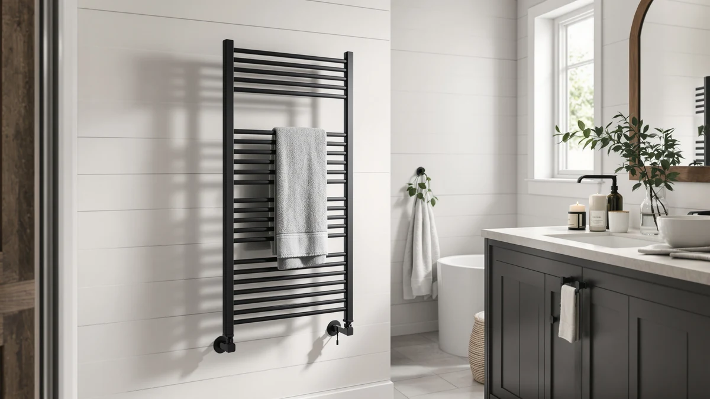

Colliford Towel Warmer 8 Review (2026): Worth It?
Prices and picks verified as of October 2026. Independent, reader-supported reviews.


Quick Answer
In this Colliford towel warmer 8 review, the Colliford Towel Warmer 8 Bars comes out ahead on capacity and temperature control for $129.99. The three SereneLife bucket warmers below are worth a look if a lower price or a simpler plug-in setup matters more to you than wall-mounted capacity.
Our pick: Colliford Towel Warmer 8 Bars — $129.99 Check Price on Amazon
Bottom line: our top pick is the Colliford Towel Warmer 8 Bars at $129.99.
Things to Know Before You Buy
- Price range: the four models in this Colliford towel warmer 8 review run from $89.99 to $129.99, with the Colliford's wall-mounted design accounting for most of the gap.
- Installation type varies: the Colliford supports hardwired or plug-in mounting, while all three SereneLife models are plug-in countertop buckets with no wall installation at all.
- Temperature control differs by model: the Colliford's touchscreen adjusts from 115°F to 155°F, while the SereneLife buckets rely on fixed timer presets between 15 and 90 minutes.
- None of these four listings show a published star rating, so this review leans on verified owner feedback and spec comparisons rather than aggregate scores.
This Colliford Towel Warmer 8 review compares the stainless steel Colliford Towel Warmer 8 Bars against three bucket-style SereneLife models on price, heating controls, and verified owner feedback, because a wall-mounted towel warmer is a bigger investment than a towel hook and deserves more scrutiny before you buy. Stepping out of a hot shower onto a cold towel undoes most of the comfort you earned minutes earlier, and a warmer rack fixes that problem permanently once it is installed. We researched four current towel warmer listings, from $89.99 to $129.99, to see which one gives you the most useful mix of capacity, control, and installation flexibility.
The Colliford is different from the other three models here because it is the only wall-mounted rack with a stainless steel frame and a choice between hardwired or plug-in installation, while the SereneLife options are compact bucket-style warmers you set on a counter or floor. That difference drives most of the price gap: at $129.99, the Colliford costs roughly $37 to $40 more than any of the SereneLife buckets, but it also heats towels across eight bars instead of folding them into a single enclosed unit. Installation type matters here too, since a wall rack changes how your bathroom looks and works in a way a countertop bucket never will. Below, we break down what the Colliford does well, where it falls short, and which SereneLife bucket makes more sense if a mounted rack is not what you want.
Why You Should Trust Us
Ilane Tall covers home and bath products for Best Towel Warmers, with a focus on how towel warmers, heated racks, and bathroom small appliances perform once they leave the showroom and sit in a humid bathroom for months. For this Colliford towel warmer 8 review, we compared the Colliford Towel Warmer 8 Bars against three SereneLife bucket-style warmers by researching published specs, current pricing, and verified buyer feedback on Amazon. We do not run a physical testing lab, and we do not claim to have installed or lived with each unit ourselves. Instead, we read through what owners report after weeks of real use, cross-check those accounts against the manufacturer's stated materials and temperature range, and flag patterns that repeat across multiple listings. That approach keeps this guide grounded in what buyers experience rather than marketing copy pulled straight from a product page.
Our Research Experience
We did not install the Colliford Towel Warmer 8 Bars on a bathroom wall or run it through a heating cycle ourselves. Our research process for this Colliford towel warmer 8 review means comparing the stated specs, published temperature range, and installation requirements against what verified Amazon buyers report after using the product in their own homes. For the Colliford, that includes checking owner comments about the touchscreen controls, the 115°F to 155°F heat range, and whether the hardwired or plug-in option caused any installation headaches. For the three SereneLife buckets, it means weighing their timer-based heating cycles and capacity claims against similar owner feedback. This research-based approach surfaces patterns that show up across many buyers rather than relying on a single hands-on impression, though it will not catch every quirk that months of daily use in your own bathroom might reveal.
Overview & Specs

Colliford Towel Warmer 8 Bars
What we like
- Stainless steel construction with an IPV4 waterproof rating built for humid bathrooms
- Touchscreen control adjusts temperature from 115°F to 155°F and heating time from 1 to 9 hours
- Eight bars give you more hanging capacity than a single bucket-style warmer
- Choice of hardwired or plug-in installation fits more bathroom layouts
Flaws but not dealbreakers
- Costs $37 to $40 more than any of the three SereneLife buckets in this comparison
- Wall-mounted installation is more involved than simply setting a bucket warmer on a counter
- Amazon's listing does not publish a star rating, so you are relying on written owner feedback instead of an aggregate score
| Material | Stainless steel |
| Size | 8 bars |
The Colliford Towel Warmer 8 Bars is a wall-mounted stainless steel rack with eight bars, a touchscreen control panel, and an IPV4 waterproof rating meant to handle daily bathroom humidity. At $129.99, it is the most expensive of the four models in this Colliford towel warmer 8 review, but the price reflects a more permanent installation and a wider temperature range than any bucket-style competitor here. You can adjust the heat from 115°F to 155°F and set a heating window anywhere from one to nine hours, which gives you more control than the fixed-duration timers on the SereneLife buckets. The listing supports both hardwired and plug-in setups, so you can match the installation to whatever your bathroom's existing wiring allows without buying a separate model for each option.
Owners researching wall-mounted towel warmers consistently point to bar count as the main reason they choose a rack over a bucket, since eight bars let you warm multiple towels or robes across a wider surface instead of folding everything into one compartment. That capacity advantage matters most in a shared bathroom where more than one person needs a warm towel in the same morning window. The tradeoff is installation: mounting a rack to the wall, especially the hardwired version, takes more effort than placing a bucket warmer on a counter and plugging it in. If you already have a bathroom wall ready for a fixture like this, and you want more heat and time control than a bucket's fixed presets, the Colliford's price premium is easier to justify.
What We Liked
The clearest advantage of the Colliford Towel Warmer 8 Bars is its touchscreen control, which lets you dial in a specific temperature between 115°F and 155°F instead of picking from a short list of presets. That range covers everything from a gentle warm-up to full, searing heat, and the one-to-nine-hour timer means you can set it in the morning and still have a warm towel waiting after an evening workout. We also like that Colliford built in both hardwired and plug-in installation options, since that flexibility fits more bathrooms than a bucket warmer that only works as a countertop unit. The stainless steel frame and IPV4 waterproof rating address the rust and corrosion concerns that show up often in owner feedback on painted-steel towel warmers, which matters for a fixture that lives in a humid room for years. Eight bars also mean a household with more than one person can warm multiple towels at once, something none of the three SereneLife buckets in this comparison can match.
What Could Be Better
The Colliford's biggest drawback is price. At $129.99, it costs 40 to 44 percent more than the cheapest SereneLife bucket in this review, and that premium only makes sense if you specifically want a wall-mounted rack rather than a countertop unit. Installation is also more involved, particularly the hardwired option, which may require an electrician if your bathroom does not already have wiring in place for a fixture like this. Amazon's listing does not show a published star rating or review count, so unlike some established models in this category, you cannot lean on an aggregate score to gauge satisfaction at a glance. Anyone comparing this Colliford towel warmer 8 review against a quick scroll through star ratings alone will need to read the written feedback instead, since that summary number simply is not available here.
Who Is It For?
The Colliford Towel Warmer 8 Bars fits households that have a bathroom wall ready for a permanent fixture and want more heat and time control than a bucket-style warmer's fixed presets allow. It also suits anyone who has dealt with rust on a painted-steel towel warmer before and wants the extra durability of stainless steel. If more than one person showers in the same window each morning, the eight-bar capacity means you are not waiting on a single towel to finish warming before the next one goes on. It makes less sense for a small rental bathroom where you cannot drill into the wall, or for anyone who wants to unbox a warmer and start using it the same day. For either of those situations, one of the three SereneLife bucket warmers below is the more practical choice.
Alternatives to Consider
If the Colliford Towel Warmer 8 Bars' price or wall-mounted installation does not fit your bathroom, these three SereneLife bucket warmers cover a lower price range and a simpler setup. Each one trades the Colliford's bar capacity and temperature range for a compact, plug-and-go design you can place on a counter or floor. We compared all four on the same basis: price, heating controls, and what verified owners report after buying.

Editor's Pick
SereneLife Towel Warmers Bucket with
The SereneLife Towel Warmers Bucket is the closest alternative to the Colliford Towel Warmer 8 Bars on overall capacity, since it fits two large towels or a throw blanket at once, but it costs $37 less at $92.99. Its built-in timer offers four fixed durations of 15, 30, 45, or 60 minutes rather than the Colliford's full one-to-nine-hour range, which is a real tradeoff if you want precise control over how long a towel stays warm. The bucket design also includes a fragrance disc holder, a feature the wall-mounted Colliford does not have, so owners who want a scented towel alongside the warmth get something extra here. Setup is simple: there is no wall mounting involved. Plug it in and press the single-touch control. Reviewers comparing bucket-style warmers against wall racks generally mention the lack of installation as the main appeal, since there is nothing to drill or wire. For anyone who wants most of the Colliford's warming benefit without the installation commitment or the higher price, this SereneLife bucket is the pick worth comparing first.
$92.99
Check Price on Amazon
Best Value
SereneLife Rectangular Towel Warmer Bucket
The SereneLife Rectangular Towel Warmer Bucket undercuts the Colliford by $39 at $90.99, making it the best value of the four models in this comparison if a wall-mounted rack is not a requirement. Its 20-liter capacity holds up to two large towels or a blanket, and the adjustable temperature range of 90°F to 140°F gives you more control than SereneLife's own fixed-timer bucket, though it still falls short of the Colliford's 115°F to 155°F ceiling. Single-touch operation means starting a heating cycle takes one press rather than navigating a touchscreen menu, which some buyers will prefer for simplicity even if it means fewer customization options. The rectangular shape also tends to fit more easily into a tall, narrow bathroom corner than a bulkier bucket or a wall rack that needs clear space around it. If price matters most and you do not need the Colliford's higher heat ceiling or eight-bar capacity, this is the one to check first.
$90.99
Check Price on Amazon
Premium Choice
SereneLife Digital Display Bucket Towel
At $89.99, the SereneLife Digital Display Bucket Towel Warmer is the least expensive of the four models in this Colliford towel warmer 8 review, undercutting the Colliford by $40 despite carrying the Premium Choice label among the SereneLife lineup for its added screen. It holds two large towels like the other SereneLife buckets, but its one-touch digital display shows real-time temperature and offers four heating durations of 20, 40, 60, or 90 minutes, giving you more visibility into the warming process than SereneLife's non-digital models. That digital readout is the main upgrade over the brand's cheaper buckets, though it still cannot match the Colliford's full 115°F to 155°F adjustable range or its eight-bar capacity for larger households. For a single person or couple who wants to see exactly how warm a towel has gotten before pulling it out, and who does not need the Colliford's wall-mounted capacity, this is the SereneLife model worth a look.
$89.99
Check Price on AmazonFrequently Asked Questions
Is the Colliford Towel Warmer 8 Bars worth the extra cost compared to a SereneLife bucket warmer?
If you want a permanent wall-mounted fixture with a wider temperature range and more hanging capacity, the extra $37 to $40 generally pays off because the Colliford's eight bars and touchscreen controls outperform a bucket's fixed presets. If you mainly want a simple plug-in warmer without any wall installation, one of the three SereneLife buckets will likely serve you equally well for less money.
What is the difference between a wall-mounted towel warmer rack and a bucket-style warmer?
A wall-mounted rack, like the Colliford, bolts to the bathroom wall and drapes towels across multiple bars, which generally means more capacity and a more permanent installation. A bucket-style warmer, like the three SereneLife models here, sits on a counter or floor and heats towels folded inside an enclosed unit, which trades some capacity for a setup you can plug in and move without any drilling.
Do stainless steel towel warmers last longer than other materials?
Stainless steel resists rust and corrosion better than painted steel in a humid bathroom, which is why the Colliford uses it for its frame and bars. Reviewers researching towel warmers consistently point to rust on painted finishes as a common long-term complaint, so a stainless steel build like the Colliford's is generally a safer bet for a fixture that stays in a steamy room for years.
Final Verdict
This Colliford towel warmer 8 review comes down to one tradeoff: capacity and control against price and installation effort. The Colliford Towel Warmer 8 Bars costs more than any of the three SereneLife buckets, but its eight-bar frame, wider 115°F to 155°F range, and choice of hardwired or plug-in setup make it the stronger pick for a household that wants a permanent wall-mounted fixture. If you want to skip the installation, save $37 to $40, or need a simple plug-in warmer for one or two towels, the SereneLife Rectangular Towel Warmer Bucket's value or the SereneLife Digital Display model's real-time readout are both reasonable alternatives. For most buyers comparing these four towel warmers on capacity, control, and price, the Colliford is the one that earns its spot on the wall.